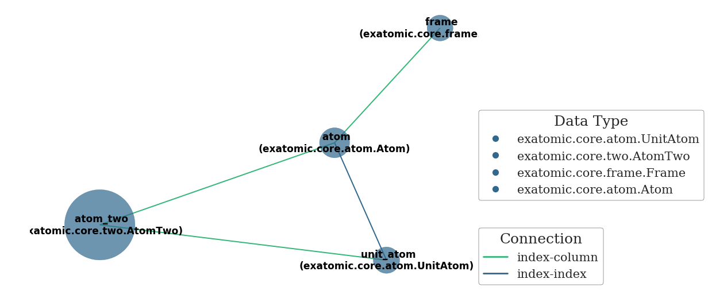

XYZ Example¶
In this tutorial we load an XYZ trajectory.
In [2]:
%matplotlib inline
import numpy as np
import exatomic
import bz2, os
if not hasattr(bz2, "open"):
bz2.open = bz2.BZ2File
- The extra stuff, bz2, is due to the fact that the data is compressed
- Typically, the syntax is as simple as exatomic.XYZ(“myfile.xyz”)
In [3]:
path = os.path.abspath(os.path.join(exatomic.__file__, "../static/H2O.traj.xyz.bz2"))
with bz2.open(path) as f:
xyz = exatomic.XYZ(f.read().decode("utf-8"))
- The xyz object is an Editor
- Editors are representations of text files on disk
- These objects facilitate parsing of output data
In [4]:
xyz.head()
0: 192
1: frame: 500
2: O 10.28508956 8.14460938 13.52695208
3: O 11.35249854 11.35175769 9.48063013
4: O 12.13309196 8.16159606 4.40491549
5: O 13.08212337 0.82074230 8.49852496
6: O 11.61851733 6.25548970 6.55479391
7: O 9.43623192 4.76428163 2.98272836
8: O 13.09122527 -0.60466753 1.95264245
9: O 12.99597287 5.17908995 0.11265448
In [5]:
xyz.tail()
227941: H 6.04990327 3.24458779 2.04330157
227942: H 3.57922006 -0.35624345 -2.44128726
227943: H -3.88712344 4.80109139 4.02831396
227944: H -1.25442119 5.64846732 2.59449545
227945: H 5.15913457 2.78450812 10.49242229
227946: H 3.73656644 16.44876653 12.33820213
227947: H 1.84052508 5.15303842 9.75342242
227948: H -0.71357806 4.52787046 1.57043161
227949: H 3.75299748 1.08580857 6.38535047
- We expect 1175 frames (remember that frames are states - in this case denoting steps in time)
In [6]:
len(xyz) // (192 + 2) # 192 atoms per frame plus 2 for the xyz file syntax
Out[6]:
1175
- Parsing is performed automatically if the attribute of interest is requested
In [7]:
xyz.atom.head()
Out[7]:
| symbol | x | y | z | frame | |
|---|---|---|---|---|---|
| atom | |||||
| 0 | O | 19.4359 | 15.39100 | 25.56210 | 0 |
| 1 | O | 21.4530 | 21.45160 | 17.91570 | 0 |
| 2 | O | 22.9281 | 15.42310 | 8.32404 | 0 |
| 3 | O | 24.7215 | 1.55097 | 16.05980 | 0 |
| 4 | O | 21.9557 | 11.82110 | 12.38670 | 0 |
In [8]:
xyz.frame.head()
Out[8]:
| atom_count | |
|---|---|
| frame | |
| 0 | 192 |
| 1 | 192 |
| 2 | 192 |
| 3 | 192 |
| 4 | 192 |
- Always check that data was correctly constructed
In [9]:
xyz.frame.tail()
Out[9]:
| atom_count | |
|---|---|
| frame | |
| 1170 | 192 |
| 1171 | 192 |
| 1172 | 192 |
| 1173 | 192 |
| 1174 | 192 |
- This happens to be a periodic calculations so lets quickly add that information
- This is important for periodic two-body calculations
In [10]:
for i, r in enumerate(("x", "y", "z")):
for j, q in enumerate(("i", "j", "k")):
if i == j:
xyz.frame[r+q] = 12.4/0.529
else:
xyz.frame[r+q] = 0.0
xyz.frame["o"+r] = 0.0
xyz.frame['periodic'] = True
In [11]:
xyz.atom.tail()
Out[11]:
| symbol | x | y | z | frame | |
|---|---|---|---|---|---|
| atom | |||||
| 225595 | H | 9.74930 | 5.26193 | 19.82770 | 1174 |
| 225596 | H | 7.06105 | 31.08350 | 23.31570 | 1174 |
| 225597 | H | 3.47807 | 9.73778 | 18.43120 | 1174 |
| 225598 | H | -1.34846 | 8.55639 | 2.96767 | 1174 |
| 225599 | H | 7.09210 | 2.05187 | 12.06650 | 1174 |
In [12]:
np.all(xyz.atom.groupby("frame").size() == 192)
Out[12]:
True
- The XYZ object has a convenience method for creating a Universe
In [13]:
uni = xyz.to_universe()
len(uni)
Out[13]:
1175
- Note that data is not duplicated!
In [14]:
uni.atom is xyz.atom
Out[14]:
True
In [15]:
uni.frame is xyz.frame
Out[15]:
True
- We can ask exatomic to compute distances (bonds)
- WARNING this operation might take a minute!
In [21]:
%time uni.compute_atom_two()
CPU times: user 46 s, sys: 594 ms, total: 46.6 s
Wall time: 18.5 s
In [27]:
uni.atom_two.shape
Out[27]:
(3564092, 5)
In [26]:
uni.atom_two[uni.atom_two['bond'] == True].shape
Out[26]:
(1919401, 5)
- This means that changes to xyz.atom will appear in uni.atom
- The network method helps keep track of what data objects exist
In [28]:
uni.network()
Out[28]:
<networkx.classes.graph.Graph at 0x7f48cf3c05c0>

- Since atom_two scales quadractically its size is large compared to the other datatables
- The unit_atom table is needed for computing periodic two-body data
In [29]:
uni.atom_two.dtypes
Out[29]:
atom0 category
atom1 category
dr float64
projection int64
bond bool
dtype: object
- Of course we can also visualize the animation of the trajectory!
In [30]:
exatomic.UniverseWidget(uni)